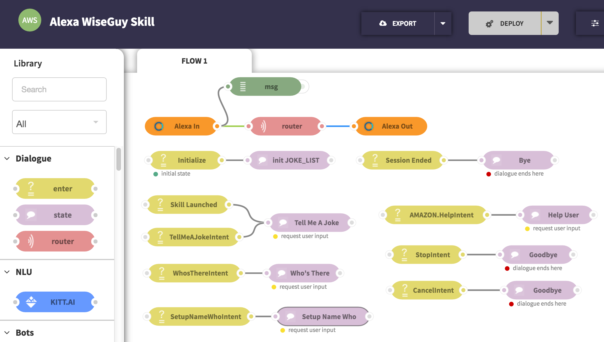
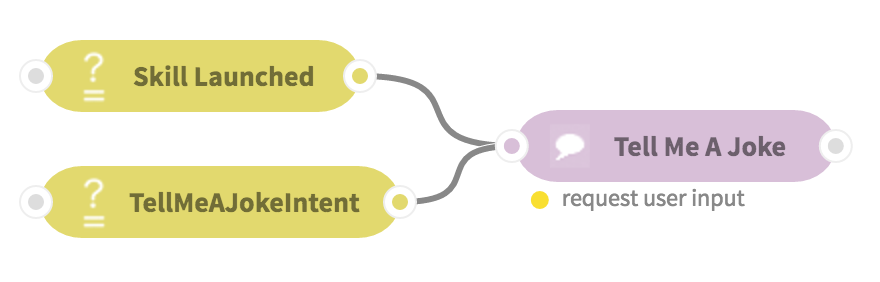

Advanced Alexa Skill Tutorial¶
Table of Contents
Introduction¶
In this tutorial, we will walk through a more complex Alexa skill that tells the knock knock joke.
- By the end of this tutorial, you will be able to:
- Using multiple intents with slots (entities) in an Alexa sample app
- Creating a multi-turn conversation
- Managing and tracking dialogue states
WiseGuy: tell a Knock Knock joke¶
Application Overview¶
Wise Guy is a sample Alexa skill that tells a knock knock joke:
You: “Alexa, ask Wise Guy to tell a joke”
Echo: “Knock knock”
You: “who’s there?”
Echo: “Beets!”
You: “Beets who?”
Echo: “Beats me!”
This skill highlights Alexa’s multi-turn ability using dialogue state tracking. At any given point, the user can ask for help and Alexa will explain how to proceed.
The main source files are the Speech Assets and index.js file.
We’ll see how to easily recreate this application with ChatFlow with a more intuitive interface.
1. Create the WiseGuy ChatFlow app¶
Go to ChatFlow and use the sample application “Alexa WiseGuy Skill”:
The application can almost work out of the box. All we need to do is to copy the “Final URL” from the Alexa In node after hitting “DEPLOY”.
2. Create the WiseGuy Alexa Skill¶
Now please follow the steps in 2. Create an Alexa Skill to create a skill for Wise Guy.
- In Step Sample Utterances, input Speech Assets.
Intent Schema:
1 2 3 4 5 6 7 8 9 10 11 12 13 14 15 16 17 18 19 20 21 22 23 24 25 26 27 28 | {
"intents": [
{
"intent": "TellMeAJokeIntent"
},
{
"intent": "WhosThereIntent"
},
{
"intent": "SetupNameWhoIntent",
"slots":[
{
"name": "SetupName",
"type": "LIST_OF_SETUP_NAMES"
}
]
},
{
"intent": "AMAZON.HelpIntent"
},
{
"intent": "AMAZON.StopIntent"
},
{
"intent": "AMAZON.CancelIntent"
}
]
}
|
LIST_OF_SETUP_NAMES
to
beets
little Old Lady
a broken pencil
snow
boo
woo
spell
atch
owls
berry
Sample Utterances:
TellMeAJokeIntent tell me a joke
TellMeAJokeIntent tell a joke
TellMeAJokeIntent say a joke
TellMeAJokeIntent make a joke
TellMeAJokeIntent give me a joke
TellMeAJokeIntent tell me a knock knock joke
TellMeAJokeIntent tell a knock knock joke
TellMeAJokeIntent say a knock knock joke
TellMeAJokeIntent make a knock knock joke
TellMeAJokeIntent give me a knock knock joke
TellMeAJokeIntent a joke
TellMeAJokeIntent a knock knock joke
TellMeAJokeIntent the joke
TellMeAJokeIntent the knock knock joke
TellMeAJokeIntent what's a joke
TellMeAJokeIntent what is a joke
TellMeAJokeIntent if it can tell me a joke
TellMeAJokeIntent will it tell me a joke
TellMeAJokeIntent can it tell me a joke
TellMeAJokeIntent to tell me a joke
TellMeAJokeIntent what's a knock knock joke
TellMeAJokeIntent what is a knock knock joke
TellMeAJokeIntent if it can tell me a knock knock joke
TellMeAJokeIntent will it tell me a knock knock joke
TellMeAJokeIntent can it tell me a knock knock joke
TellMeAJokeIntent to tell me a knock knock joke
WhosThereIntent who is there
WhosThereIntent who's there
WhosThereIntent who there
WhosThereIntent who is this
WhosThereIntent who's this
SetupNameWhoIntent {SetupName} who
Now we are all set! Use the Service Simulator or your Echo device to test it!
Multi turn and state tracking explained¶
The global variable¶
Take a look at the init JOKE_LIST state node. In it, we have created a
global variable that can be used across the dialogue. It is called JOKE_LIST
and was set in with the following code:
var JOKE_LIST = [
{setup: "To", speechPunchline: "Correct grammar is <break time=\"0.2s\" /> to whom.",
cardPunchline: "Correct grammar is 'to whom'."},
...
]
global.set("JOKE_LIST", JOKE_LIST);
Then it can be retrieved later in any function or state node by using:
var JOKE_LIST = global.get("JOKE_LIST");
The global environment is limited to the current application. One
application cannot access another application’s global environment.
In addition, in the init JOKE_LIST state node, we initialized the dialogue stage:
msg.kitt.stage = null;
State tracking¶
Take a look at the Tell Me A Joke state node, it sets up the dialogue stage:
{kind=link}
Note
the request user input click at the bottom of state node indicates the router to send message out at this state node right away without attempting to visit another enter/state node.
//Select a random joke and store it in the session variables.
var jokeID = Math.floor(Math.random() * JOKE_LIST.length);
//The stage variable tracks the phase of the dialogue.
//When this function completes, it will be on stage 1.
msg.kitt.stage = 1;
msg.kitt.setup = JOKE_LIST[jokeID].setup;
msg.kitt.speechPunchline = JOKE_LIST[jokeID].speechPunchline;
msg.kitt.cardPunchline = JOKE_LIST[jokeID].cardPunchline;
Remember that everything in msg.kitt is maintained by the dialogue router,
persisting over the whole dialogue session. Thus, whenever a new utterance within
the same dialogue session comes in, previous turn’s msg.kitt can still be
accessed. msg.kitt is also assigned to sessionAttributes outputted
through Alexa Out and persisted by the Alexa service. So next time an Alexa
Request
comes in, the same session attributes can be accessed via msg.alexa.session.attributes
(maintained by Alexa), or msg.kitt (maintained by ChatFlow).
The Who’s There state node then advances the dialogue stage by 1 if previous
msg.kitt.stage == 1:
{kind=link}
if (msg.kitt.stage === 1) {
//Retrieve the joke's setup text.
speechText = msg.kitt.setup;
//Advance the stage of the dialogue.
msg.kitt.stage = 2;
repromptText = "You can ask, " + speechText + " who?";
}
Similarly, the Setup Name Who state node advances the dialogue stage by 1 if previous
msg.kitt.stage == 2:
{kind=link}
if (msg.kitt.stage === 2) {
speechText = msg.kitt.speechPunchline;
cardOutput = msg.kitt.cardPunchline;
msg.alexa.outputSpeech = {
ssml: '<speak>' + speechText + '</speak>',
type: "SSML"
};
// the joke completes successfully, end session.
msg.kitt._session_ended = true;
return msg;
}
In addition, it sets msg.kitt._session_ended = true; because that’s end of
the knock knock joke!